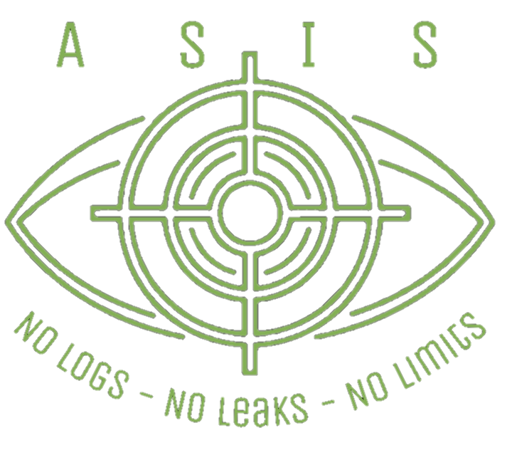

سند فنی نرمافزار ASIS
تحلیل جامع ساختار امنیتی، اصول رمزنگاری و منطق مهندسی عملکردی نرمافزار Advanced Secure Information System
نوع سند: سند فنی رسمی بینالمللی (White Paper) | تنظیمشده توسط: علی رحیمی کیاسری، محقق امنیت سایبری | تاریخ آخرین بهروزرسانی: 2025/06/12
بخش اول: مقدمه تخصصی
نرمافزار Advanced Secure Information System (ASIS) نه صرفاً یک ابزار رمزنگاری، بلکه یک زیرساخت سایبری بومی و مهندسیشده برای تضمین حداکثری حریم خصوصی دیجیتال کاربران است؛ سیستمی که با رعایت اصول رمزنگاری کلاسیک، رمزنگاری نوین و معماری امنیت عملیاتی (OpSec)، در سطحی بالاتر از استانداردهای امنیتی تجاری پیادهسازی شده است. این نرمافزار با اتکا بر اصل «امنیت مطلق مبتنی بر انحصار سختافزاری و شخصیسازی در زمان ساخت»، برای محافظت از دادههای فوقحساس طراحی شده و از هرگونه وابستگی به ساختارهای ذخیرهسازی یا شبکهای پرهیز میکند.
بخش دوم: اصول طراحی و فلسفه امنیتی
2.1 اصل شخصیسازی مطلق (Absolute Personalization)
هر نسخه از نرمافزار بر اساس اطلاعات سختافزاری غیرقابل جعل (مانند سریال مادربرد، MAC آدرس، CPU ID و...) و اطلاعات ورود اختصاصی کاربر، در لحظه تولید برای یک سیستم خاص کامپایل میگردد. هیچ نسخهای قابلیت اجرا در سیستمی غیر از آنچه مشخص شده را ندارد.
2.2 اصل انکارپذیری منطقی (Plausible Deniability)
نرمافزار فاقد هرگونه فایل پیکربندی، کلید رمزنگاری ذخیرهشده، رمز عبور، یا logهای محلی است. لذا در مواجهه با تحلیلهای قضایی یا امنیتی، حتی توسعهدهنده نیز قادر به بازیابی یا تأیید اطلاعات کاربر نخواهد بود. این ویژگی مشابه ساختار سیستمهایی چون Tails OS و VeraCrypt طراحی شده است.
2.3 اصل استقلال کامل از بسترهای بیرونی (Full Offline Trust Model)
نرمافزار هیچگونه ارتباط شبکهای، بروزرسانی آنلاین، یا وابستگی به API خارجی ندارد. بر خلاف مدلهای Client-Server، این سیستم بهطور کامل به محیط بسته کاربر وابسته است و اجرا تنها در صورت غیرفعال بودن کلیه پروتکلهای ارتباطی (Internet، Bluetooth، NFC، Location Services) ممکن خواهد بود.
بخش سوم: ساختار رمزنگاری و الگوریتمی
3.1 الگوریتمهای استفادهشده:
- AES-256-GCM: رمزنگاری متقارن سریع و مقاوم در برابر حملات زمانبندی
- RSA-4096: رمزنگاری نامتقارن برای مبادله کلید اولیه، مشابه مدلهای استفادهشده در VeraCrypt
- XChaCha20-Poly1305: الگوریتم جریانمحور با تأخیر کم و قدرت بالا در محیطهای محدود منابع (مانند Signal Protocol)
- توابع هش و مشتق کلید سفارشی: توسعه اختصاصی الگوریتم KDF و Hash جهت مقاومسازی در برابر حملات مبتنی بر دادههای از پیش شناختهشده (pre-image/resistance)
3.2 ساختار اشتقاق کلید (Key Derivation Schema)
کلید اصلی رمزنگاری در لحظه اجرا، با ترکیب دادههای زیر و استفاده از تابع KDF اختصاصی تولید میشود:
- رمز عبور کاربر (ورودی مستقیم)
- پارامترهای سختافزاری ثابت (مادربرد، CPU، MAC)
- شماره سریال فلش مموری
- تاریخ و ساعت اولین ساخت نرمافزار (بهعنوان non-repeating salt)
بخش چهارم: احراز هویت، قفل سختافزاری، و زمانبندی دسترسی
4.1 مراحل ورود و اعتبارسنجی:
- ورود نام کاربری و رمز عبور شخصی
- حل یک CAPTCHA پیچیده برای جلوگیری از اجرای خودکار توسط رباتها
- تأیید سختافزاری کامل: مطابقت شناسههای مادربرد، CPU، MAC و سریال فلش مموری
- در صورت صحت، دسترسی موقت ۳۰ دقیقهای صادر میشود. پس از آن، نرمافزار قفل شده و برای ادامه نیاز به احراز مجدد دارد
4.2 منطق زمانی و نظارت پویا:
هدف از محدودسازی زمان دسترسی، جلوگیری از سوءاستفاده از نرمافزار در غیاب کاربر (مثلاً هنگامی که کاربر سیستم را ترک کرده یا در حالت خواب است) میباشد.
4.3 مکانیسم خودتخریبی (Self-Destruct Mechanism):
نرمافزار به طور پیوسته محیط اجرایی خود را پایش میکند. در صورتی که تشخیص دهد در یک محیط شبیهسازی شده (Virtual Machine) یا Sandbox در حال اجراست، یا پس از ۳ بار ورود متوالی رمز عبور اشتباه توسط کاربر، بلافاصله وارد حالت خودتخریبی شده و کلیه مسیرهای دسترسی به دادههای رمز شده را بهصورت برگشتناپذیر از بین میبرد.
بخش پنجم: سیاست پوششی (Camouflage Protocol) و اجتناب از برانگیختن حساسیت
5.1 الزام به بلاک شبکه:
کاربر موظف است در زمان اجرای نرمافزار، دسترسی اینترنت آن را بهصورت دستی در فایروال مسدود نماید. در عین حال، نرمافزار با استفاده از دستورات سطح سیستم (کتابخانه os) صحت این بلاک بودن را بررسی و در صورت نبود آن، هشدار امنیتی صادر میکند.
5.2 در صورت اتصال ناخواسته:
برنامه وارد حالت پوششی میشود و با اجرای یک رابط گرافیکی شبیه نرمافزارهای عمومی (مثلاً نمایش وضعیت آبوهوا)، از شناسایی توسط مهاجم حرفهای جلوگیری میکند.
بخش ششم: روشهای ذخیرهسازی مخفیانه و جلوگیری از ردیابی
6.1 روشهای پنهانسازی:
- ذخیره در فضای غیرمجاز دیسک (Unallocated Space)
- تعویض ساختار فایلهای سیستمی جعلی (مانند hiberfil.sys یا pagefile.sys)
- استگانوگرافی پیشرفته در فایلهای رسانهای (مشابه ابزارهایی چون Steghide با الگوریتم سفارشی)
6.2 پاکسازی مطلق:
هرگونه فایل موقت، حافظه کش یا مسیر استفادهشده پس از خروج از برنامه با استفاده از الگوریتم Secure Delete بهطور برگشتناپذیر پاک میشود.
بخش هفتم: تولید و توزیع بهصورت End-to-End اختصاصی
7.1 فرآیند ساخت:
کاربر پس از پرداخت اینترنتی امن (End-to-End Payment)، اطلاعات سختافزاری را از طریق یک ابزار رمزنگاریشده ارسال میکند. توسعهدهنده پس از بررسی اطلاعات، نسخهای سفارشی و اختصاصی از نرمافزار را برای همان سیستم کامپایل کرده و از طریق ایمیل ایمن تحویل میدهد.
7.2 توجه حقوقی:
هیچ نسخهای از کلید، اطلاعات کاربر، یا فایلهای رمزنگاریشده نزد توسعهدهنده باقی نمیماند. در صورت مفقودی فلش مموری یا فراموشی رمز عبور، بازگردانی اطلاعات از نظر فنی و حقوقی غیرممکن است.
بخش هشتم: پاسخ به دغدغهها و شبهات رایج
آیا این نرمافزار ابزار جاسوسی یا نظامی محسوب میشود؟
خیر. نرمافزار کاملاً آفلاین بوده و هیچگونه تبادل دادهای ندارد. همچنین سازوکار توزیع آن کنترلشده است و از طریق GitHub یا دیگر بسترهای عمومی در دسترس نیست.
چرا این سطح از رمزنگاری سنگین استفاده شده است؟
هدف اصلی، حفاظت از اطلاعات کاربران در بدترین سناریوهای امنیتی است. همانند BitLocker یا VeraCrypt، این سطوح رمزنگاری برای مقابله با مهاجمان دارای دسترسی فیزیکی به سیستم طراحی شدهاند.
آیا توسعهدهنده به فایلهای کاربر دسترسی دارد؟
خیر. ساختار نرمافزار بهگونهای است که پس از تولید نسخه شخصیشده، حتی سازنده نیز به هیچ بخشی از دادههای رمزگذاریشده یا کلید دسترسی ندارد.
آیا میتوان از نرمافزار برای مقاصد غیرقانونی استفاده کرد؟
هر ابزار تکنولوژیک قابلیت استفاده قانونی و غیرقانونی دارد. با این حال، ساختار قفل سختافزاری، نیاز به فلش خاص، و نحوه توزیع کنترلشده، امکان استفاده در فعالیتهای غیرمجاز را بهشدت محدود میکند.
بخش نهم: ملاحظات حقوقی و مالکیت معنوی
هر گونه کپیبرداری، مهندسی معکوس، تلاش برای بازتولید منطق نرمافزار، نقض حق مالکیت مادی یا معنوی و دور زدن قوانین استفاده از نرمافزار مطلقاً ممنوع است. تیم تحقیق و توسعه امنیت سایبری منبع سیاه، حق پیگیری قانونی و قضایی علیه هرگونه نقض این اصول را در داخل و خارج از کشور برای خود محفوظ میدارد.
نتیجهگیری نهایی
Advanced Secure Information System (ASIS)، نمونهای نادر از ترکیب فلسفه امنیت سایبری، اصول رمزنگاری مدرن، و مهندسی دفاعی سطح بالا در یک محصول واحد است. این نرمافزار نه یک ابزار عمومی، بلکه یک زیرساخت خصوصی رمزنگاریشده با سطح امنیت اطلاعاتی (Intelligence-grade Security) است که تنها برای کاربر نهایی قابل استفاده بوده و هیچگونه راه نفوذ، بازیابی، یا مهندسی معکوس مؤثری برای آن باقی نگذاشته شده است.
این سند جهت بررسی فنی تخصصی تدوین شده و نسخه راهنمای عمومی کاربران در سند جداگانه ارائه خواهد شد.